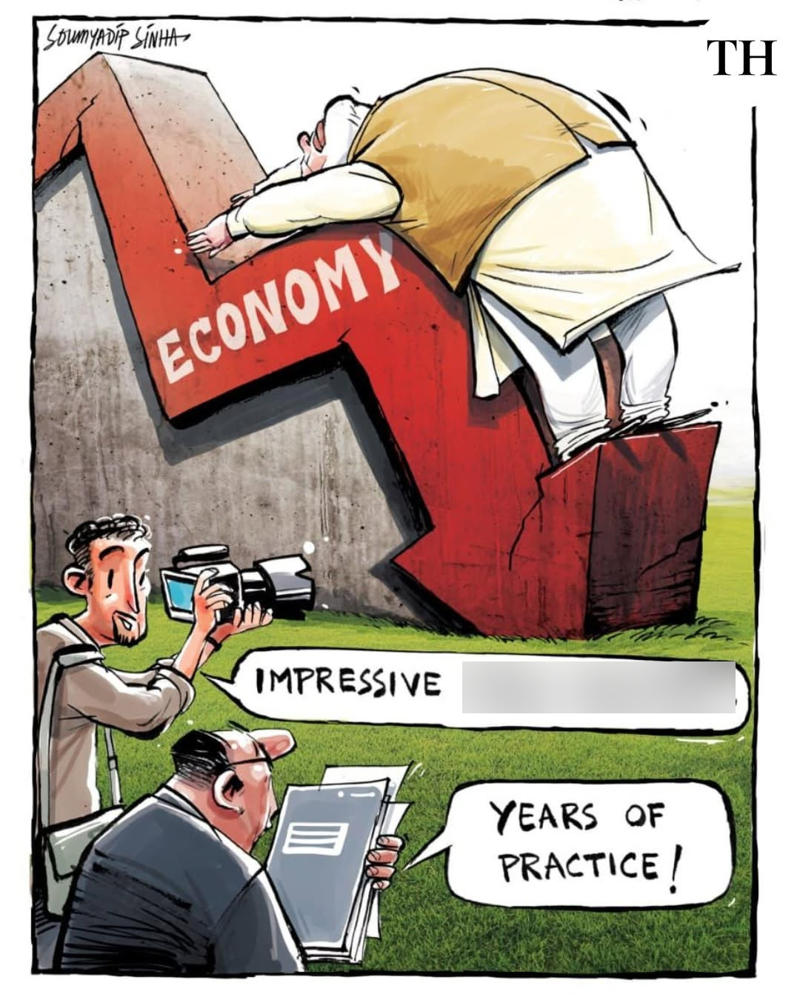

AAP YAHA AA JAIYE
Question 1
Question
X is a small popular destination in the United States Virgin Islands. Over the years, X developed several unusual structures including a brightly colored temple-like building and multiple luxury villas. In the late 2010s, a certain announcement led to intense international media attention to it. The official name of this location is Little Saint James. Identify X.
ANSWER
Epstein Island

AAP YAHA AA JAIYE
Question 2
Question
In 2023 the Punjab-Haryana High Court became the first court in
India to decide on the bail plea of an accused with reference to
something unique. The bench was hearing the bail application of an
accused arrested in June 2020 for alleged rioting and criminal
conspiracy. Justice Chitkara assessed the reply received from
_____ as the first of its kind and rejected the accused's bail
plea on the basis of his experiences and decisions made earlier.
FITB
ANSWER
ChatGpt
AAP YAHA AA JAIYE
Question 3
Question
During the political turmoil in the UK in 2022, then Prime
Minister Boris Johnson reportedly remarked the words “Kai su
teknon” when his Chancellor Rishi Sunak resigned. While historians
associate this sentiment with antiquity in Greek form, the version
that entered global popular culture did not originate in Greek.
ID the more popular version of this phrase which also appears as a
dramatic reference in a recent big-budget film.
ANSWER
Et tu, Brute?

AAP YAHA AA JAIYE
Question 4
Question
During World War II, under strict rationing and nightly blackouts
in the United Kingdom, stories spread of pilots and defenders
displaying near-impossible precision under low visibility
conditions. At that time, these extraordinary capabilities were
explained under the guise of an unsuspecting object. Only much
later did it emerge that this narrative had been deliberately
amplified to divert attention from a far more sophisticated
wartime development operating in secrecy.
What widely believed claim now considered a myth
emerged from this campaign?
ANSWER
Carrots improve eyesight
AAP YAHA AA JAIYE
Question 5
Question 5
This French Football Jersey is a nod to what particular entity/event?
[Image below]

ANSWER
Colour of Statue of liberty

AAP YAHA AA JAIYE
Question 6
Question 6

Put Funda
ANSWER
International Yoga Day